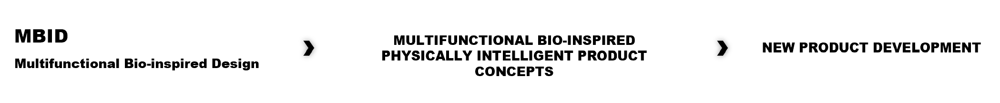

MBID (Multifunctional Bio-inspired Design) is a biological morphology-informed, rule-based product design and engineering framework for systematically generating multifunctional bio-inspired physically intelligent product concepts that can be translated into technically feasible products.
MBID enables the systematic integration of intentionally selected and unconventional functional combinations to create multifunctional bio-inspired physically intelligent products
MBID systematically translates biological physical intelligence into multifunctional bio-inspired physically intelligent engineering concepts for product design and engineering
This release marks the first public release of MBID v1. Future versions will introduce refinements, expanded capabilities, AI-assisted workflows, and additional engineering demonstrations as the framework continues to evolve.
The latest updates, documentation, and future releases of the MBID framework are available at: MBID-GitHub
The objective of MBID is to systematically translate biological morphology into multifunctional physically intelligent product concepts that can be realised as technically feasible products through engineering design, engineering verification, and ultimately experimental validation.
MBID leverages bio-inspired physical intelligence to design multifunctional systems that are resource- and energy-efficient, require little or no active electronic control, and exhibit robust, sustainable, safe, self-adaptive, and inherently easy-to-control behaviour.

MBID supports concept generation, product architecture development, and system-level design, where functionality emerges from the interaction of geometry, material organisation, and structural hierarchy across multiple scales. The framework enables designers and engineers to systematically explore and integrate surfaces, cellular structures, shapes, and cross-sectional features to develop multifunctional solutions.

The versatility of MBID has been demonstrated through applications across multiple sectors, including minimally invasive medical and surgical devices (painless mesoscale suture pins), passive robotic mobility devices (non-pneumatic tyres), thermal-management devices (heat-absorbing, low-pressure-drop mesoscale architectures), and multifunctional wearable devices (marine-adaptive skins and impact-protection helmets).


Explore the BIKAS-Morphological Domain Integration Knowledge Base to identify and integrate biological morphological features into your design process.
Click below for step-by-step instructions on using BIKAS to generate a medical device: painless mesoscale suture pin for wound healing.
1. “Metamaterials” – Source: https://mm.ethz.ch/research-overview/metamaterials.html
2. “Watchman TM Implant Animation” – Source: https://www.bch.org/media/video-center/bch-news-segments/watchman-implant-animation/
3. “DLR - Like the surface of the Moon – robotic exploration of extreme environments on Mount Etna” – Source: https://www.dlr.de/en/latest/news/2016/20160923_like-the-surface-of-the-moon-robotic-exploration-of-extreme-environments-on-mount-etna_19403,
4. “Fras, J., Noh, Y., Macias, M., Wurdemann, H. and Althoefer, K., 2018, May. Bio-inspired octopus robot based on novel soft fluidic actuator. In 2018 IEEE international conference on robotics and automation (ICRA) (pp. 1583-1588). IEEE.”
Feel free to reach out for collaboration, queries, or feedback
Pavan Tejaswi Velivela, Ph.D.
Architect of Multifunctional Bio-inspired Design (MBID)
Additive Design and Manufacturing Lab (ADML)
email at: pavan.velivela@mail.mcgill.ca; pavan.velivela90@gmail.com
Fiona Zhao, Ph.D., F ASME
Professor, William Dawson Scholar
Ram Panda Faculty Scholar in Sustainable Engineering & Design
Director, Additive Design and Manufacturing Lab (ADML)
Associate Director, Trottier Institute for Sustainability in Engineering & Design (TISED)
Department of Mechanical Engineering
McGill University
email at: yaoyao.zhao@mcgill.ca
Additive Design and Manufacturing Lab (ADML)
McGill University
Visit us at: https://adml.lab.mcgill.ca/


Copyright © 2026 Pavan Tejaswi Velivela & McGill University. All rights reserved.